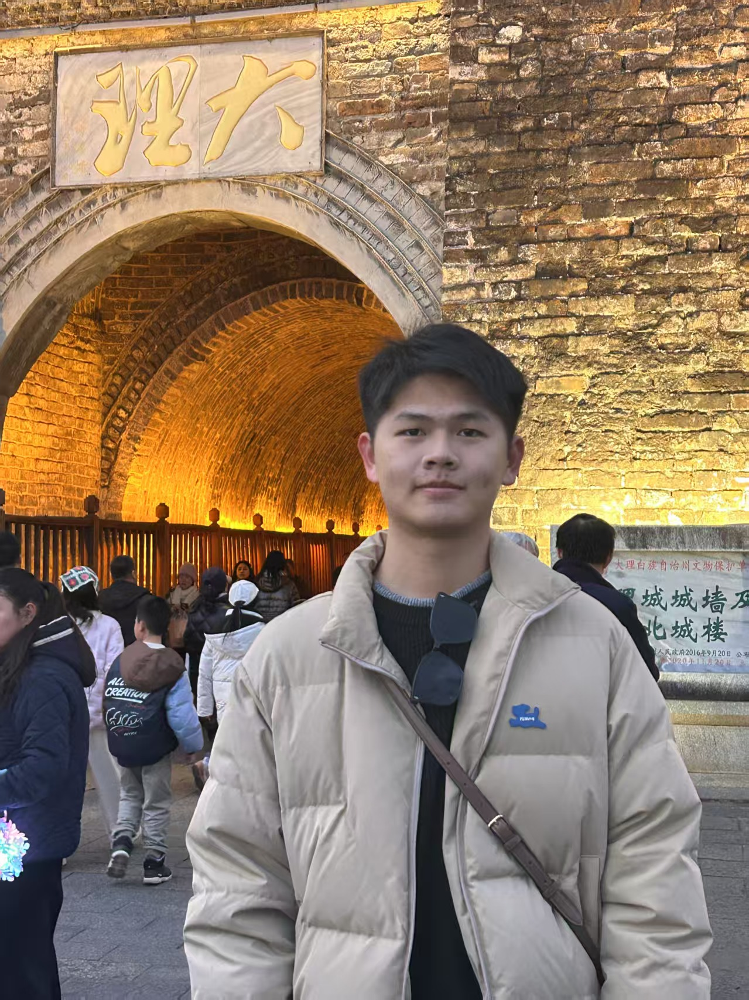

Weijia LiufuUndergraduate Student
SYSU |
 |

Biography
I am Liu Fu Weijia, a junior majoring in Intelligent Science and Technology at Sun Yat-sen University. Born in 2003 in Zhanjiang, Guangdong, I possess a solid mathematical foundation and a keen analytical mindset. I am passionate about data modeling, deep learning, and computer technologies, and I have honed my skills in Python, C, C++, Matlab, Go, and HTML, while also being proficient in Linux operations. I look forward to leveraging my technical expertise and proactive approach to make a significant impact in the field of intelligent technology.
My research interests lie in Embodied Intelligence. Since 2024, I have been exploring how intelligent agents can perceive, navigate, and interact within complex, dynamic environments. My work focuses on designing novel approaches that integrate sensorimotor coordination with MLLMs, aiming to build systems that not only understand their surroundings but also engage with them in a meaningful way. I am passionate about developing applications where cognition meets action, paving the way for innovative advancements in embodied AI.
Feel free to contact me by email if you are interested in discussing or collaborating with me.
Honors & Awards
| [12/2024] First Prize Outstanding Scholarship - Sun Yat-sen University |
| [12/2024] Professional Skills Competition Scholarship - Sun Yat-sen University |
| [12/2024]Third Prize in Datang Cup Communication Design Competition (Provincial Level) |
| [12/2023] Special Scholarship for Moral Excellence - Sun Yat-sen University |
| [12/2023] Second Prize Outstanding Scholarship - Sun Yat-sen University |
| [12/2023] First Prize - Guangdong Provincial College Mathematics Competition |
| [01/2023] Third Prize - Guangdong Mathematical Modeling Contest |
| [12/2023]Excellent Report Award - 13th "Current Economics" Analysis Competition |
| [12/2022] Second Prize Outstanding Scholarship - Sun Yat-sen University |